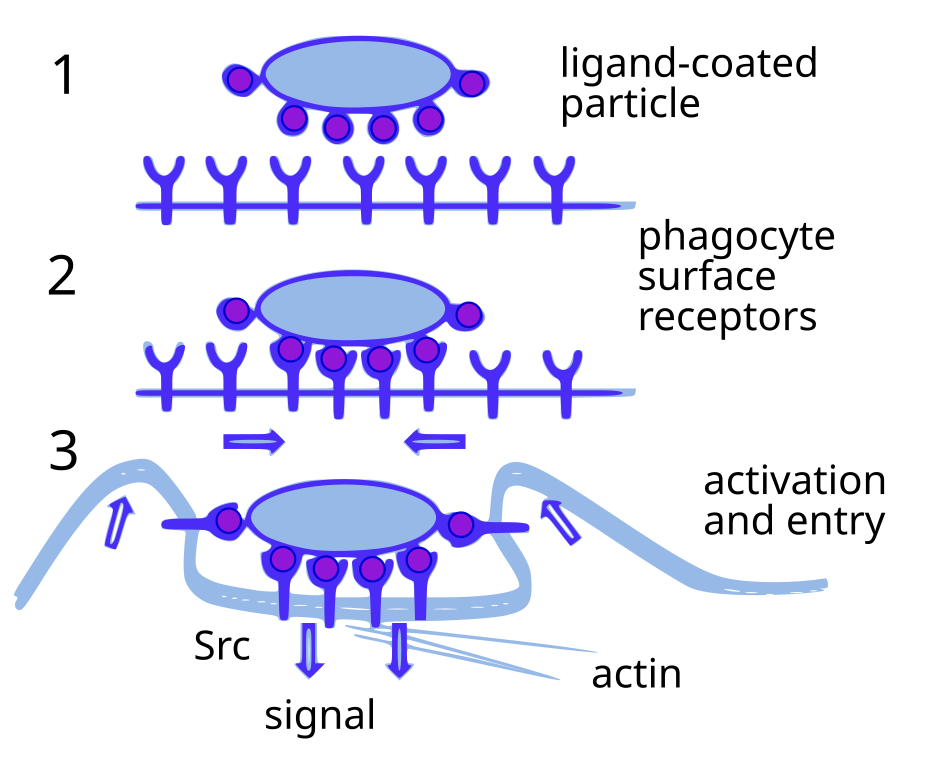
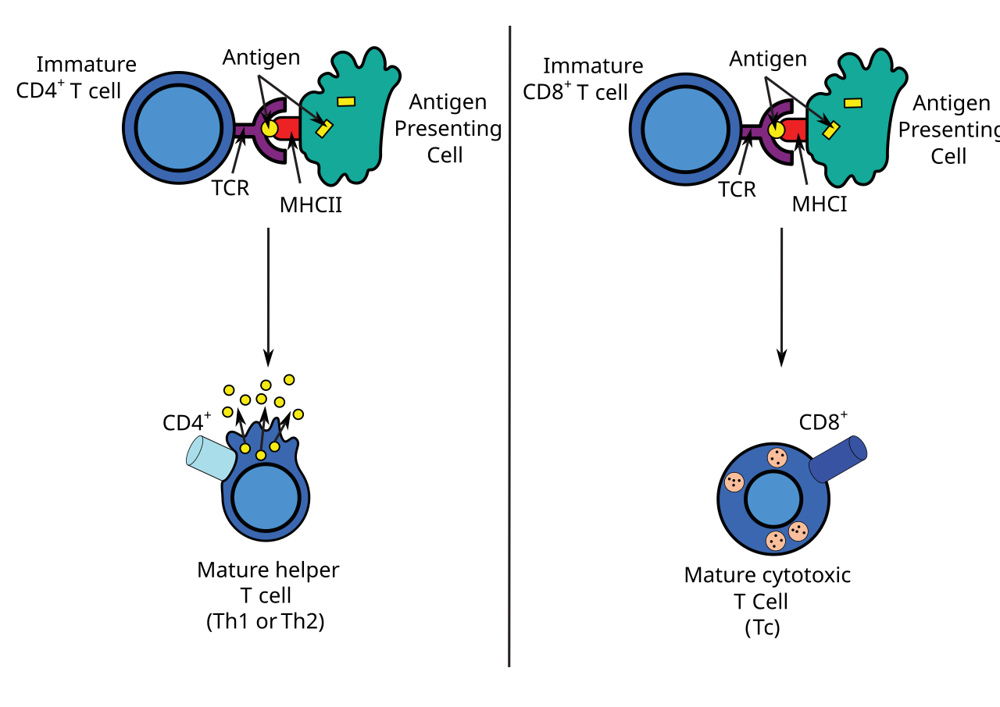

Esta plataforma é um recurso de simulação educacional. Nenhuma
informação aqui apresentada substitui consulta, diagnóstico ou tratamento
médico. Sempre procure orientação profissional para decisões clínicas.
Módulo 1 – Fundamentos da Imunologia 🧬
Órgãos e Células do Sistema Imune
O sistema imune humano é composto por órgãos linfoides e um
repertório diversificado de células. Órgãos linfoides primários
incluem a medula óssea, onde todas as células
sanguíneas se originam, e o timo, responsável
pela maturação dos linfócitos T. Órgãos linfoides secundários
englobam linfonodos, o baço, as
amígdalas e a mucosa associada ao tecido linfoide
(MALT), que promovem encontros entre antígenos e linfócitos maduros
para iniciar respostas imunológicas adaptativas【932704689189318†L310-L329】.
Entre as células do sistema imune, destacam‑se os
leucócitos. Na imunidade inata, os fagócitos como
neutrófilos e macrófagos patrulham o sangue e os
tecidos, reconhecendo e eliminando agentes invasores por
fagocitose【932704689189318†L462-L489】. Os
mastócitos, basófilos e eosinófilos
liberam mediadores químicos e participam de reações alérgicas e
resposta a parasitas【932704689189318†L499-L505】. As
células dendríticas atuam como vigias nas
superfícies de contato (pele e mucosas), capturam antígenos e os
apresentam a linfócitos T, conectando imunidades inata e
adaptativa【932704689189318†L491-L499】. Os
linfócitos NK reconhecem células infectadas ou
tumorais que expressam baixos níveis de MHC I e eliminam essas
células por indução de apoptose【932704689189318†L514-L523】.
Micrografia eletrônica de varredura de sangue humano normal.
Observam‑se hemácias em forma de disco, leucócitos como linfócitos,
monócitos e neutrófilos, além de plaquetas discóides【932704689189318†L451-L461】.
Moléculas de Reconhecimento e Comunicação
Para detectar microrganismos, as células imunes expressam
receptores de reconhecimento de padrões, como os
receptores do tipo Toll (TLRs), que se ligam a componentes
conservados de patógenos, desencadeando a produção de citocinas e
a ativação de programas de defesa【932704689189318†L430-L444】. No
citosol, receptores como os NOD‑like e RIG‑like detectam
produtos bacterianos ou RNA viral【932704689189318†L442-L445】.
As citocinas são proteínas secretadas por células
imunes e teciduais que modulam a atividade de outras células; por
exemplo, interleucinas coordenam a comunicação entre leucócitos e
interferons possuem efeitos antivirais, como bloquear a síntese
proteica nas células infectadas【932704689189318†L1010-L1016】. As
quimiocinas são citocinas especializadas em atrair
células para o foco de infecção (quimiotaxia)【932704689189318†L1010-L1016】. O
sistema complemento, composto por mais de 20
proteínas séricas, complementa a ação de anticorpos, ativando uma
cascata proteolítica que opsoniza e lisa microrganismos【932704689189318†L554-L573】.
Receptores de linfócitos incluem os receptores de célula
B (BCR), que são essencialmente anticorpos de membrana
reconhecendo antígenos nativos, e os receptores de célula
T (TCR), que reconhecem peptídeos apresentados por moléculas
MHC. A diversidade de BCR e TCR é gerada por recombinação
somática e permite que o sistema imune reconheça uma ampla gama de
antígenos【932704689189318†L600-L617】.
Conceitos de Antígeno e Anticorpo
Um antígeno é qualquer molécula reconhecida como
não‑ própria que se liga especificamente a receptores imunes,
desencadeando resposta adaptativa【932704689189318†L360-L367】. Podem
ser proteínas, polissacarídeos ou pequenas moléculas (haptenos)
conjugadas a carreadores. Os linfócitos B respondem a antígenos
nativos via BCR; já os linfócitos T reconhecem peptídeos
processados apresentados por MHC. A especificidade dos receptores
determina a seleção clonal, em que células que
reconhecem um antígeno proliferam e se diferenciam【932704689189318†L618-L621】.
Anticorpos ou imunoglobulinas são moléculas
secretadas por plasmócitos derivados de linfócitos B ativados. Cada
anticorpo possui duas cadeias pesadas e duas leves formando
regiões variáveis (determinantes de especificidade) e constantes
(funções efetoras). As diferentes classes (IgM, IgG, IgA, IgE e
IgD) refletem funções como neutralização de toxinas, opsonização
para fagocitose e ativação de complemento.
Autoavaliação
Selecione o nível de dificuldade e inicie o quiz.
Módulo 2 – Imunidade Inata 🛡️
Barreiras Físicas e Químicas
A primeira linha de defesa contra infecções compreende barreiras
físicas e químicas. A pele, com sua camada córnea e secreções
sebáceas, impede a entrada de microrganismos【932704689189318†L373-L383】.
Mucosas do trato respiratório e gastrointestinal secretam muco que
aprisiona partículas e contém enzimas como lisozima e
fosfolipase A2 que degradam paredes bacterianas【932704689189318†L386-L389】.
Secreções como lágrimas e urina removem agentes por lavagem, e o
ambiente ácido do estômago inibe o crescimento microbiano【932704689189318†L390-L394】.
Barreira química adicional é fornecida por peptídeos
antimicrobianos, como as β‑defensinas, produzidos por células
epiteliais e neutrófilos【932704689189318†L386-L389】. A microbiota
comensal da pele e mucosas compete com patógenos por nutrientes e
espaço, modulando o pH e a disponibilidade de ferro【932704689189318†L395-L399】.
Sistema Complemento
O sistema complemento é uma cascata bioquímica composta por mais de
20 proteínas séricas que “complementam” a ação dos anticorpos,
atacando membranas de células estranhas e desencadeando
inflamação【932704689189318†L554-L573】. Sua ativação ocorre por três
vias principais: clássica (dependente de
anticorpos), lectina (ligação de lectinas a
carboidratos microbianos) e alternativa
(ativação espontânea na superfície de patógenos). A ativação
sequencial gera produtos como C3b, que opsoniza microrganismos,
fragmentos anafilotóxicos (C3a, C5a) que recrutam células e o
complexo de ataque à membrana (MAC), que promove lise
direta【932704689189318†L569-L573】.
Fagócitos (Neutrófilos e Macrófagos) e Processo Inflamatório
Os neutrófilos, abundantes no sangue, migram
rapidamente para locais de infecção guiados por quimiocinas. Após
fagocitarem patógenos, fundem o fagossomo com lisossomos e
liberam enzimas e espécies reativas que degradam o invasor【932704689189318†L465-L473】. Os
macrófagos residem nos tecidos e atuam como
sentinelas, removendo células mortas e participando da
apresentação de antígenos【932704689189318†L484-L489】.
A inflamação é uma resposta inicial do organismo
caracterizada por rubor, calor, dor e edema. Lesões ou infecções
induzem a liberação de eicosanoides e citocinas pró‑inflamatórias
(por exemplo prostaglandinas e interleucinas) que aumentam a
permeabilidade vascular e recrutam leucócitos para o local
afetado【932704689189318†L531-L538】. A eliminação do agente leva
à resolução com liberação de mediadores anti‑inflamatórios.

Esquema em três etapas da fagocitose: reconhecimento do alvo por
receptores na membrana do fagócito, invaginação e formação do
fagossomo e posterior fusão com lisossomos para digestão.
Células Dendríticas e Células NK
Células dendríticas são fagócitos especializados
localizados em tecidos expostos (pele, mucosa respiratória e
gastrointestinal). Após capturar antígenos, migram para linfonodos
onde maturam e apresentam peptídeos via MHC II a linfócitos T
auxiliares, iniciando a resposta adaptativa【932704689189318†L491-L499】.
As células NK são linfócitos inatos que reconhecem
células infectadas ou tumorais por meio da detecção de baixos
níveis de MHC I (“sinal de ausência”) e de moléculas de estresse
na superfície. Quando ativadas, liberam perforinas e granzimas que
induzem apoptose no alvo【932704689189318†L514-L523】.
Autoavaliação
Selecione o nível de dificuldade e inicie o quiz.
Módulo 3 – Imunidade Adaptativa 🎯
Apresentação de Antígenos e o Complexo Principal de Histocompatibilidade
A imunidade adaptativa evoluiu nos vertebrados
para gerar respostas específicas e memória imunológica. Linfócitos
reconhecem antígenos somente quando peptídeos são exibidos por
moléculas do complexo principal de histocompatibilidade
(MHC). Moléculas MHC I estão presentes na maioria das células
nucleadas e apresentam peptídeos endógenos a linfócitos CD8+,
induzindo respostas citotóxicas; moléculas MHC II ocorrem em
células apresentadoras de antígeno e apresentam peptídeos
extracelulares a linfócitos CD4+, desencadeando respostas
auxiliares【932704689189318†L600-L609】.
O processo de apresentação de antígenos envolve degradação
proteica, transporte de peptídeos para o retículo endoplasmático e
carregamento no MHC. Esse complexo é reconhecido pelo TCR em
linfócitos T, juntamente com co‑receptores (CD8 ou CD4) que
estabilizam a interação【932704689189318†L647-L679】.

Esquema mostrando a apresentação de antígeno por MHC II a linfócitos
CD4+ (esquerda) e por MHC I a linfócitos CD8+ (direita). A
interação com o TCR e co‑receptores leva à ativação e à liberação
de citocinas ou citotoxinas.
Linfócitos T: Ativação, Diferenciação e Função
Há três principais subtipos de linfócitos T: citotóxicos
(CD8+), auxiliares (CD4+) e
reguladores. Linfócitos CD8+ reconhecem peptídeos
apresentados por MHC I e, quando ativados, liberam perforina e
granzimas que induzem apoptose em células infectadas ou tumorais【932704689189318†L647-L659】.
Linfócitos CD4+ reconhecem antígenos em MHC II e secretam
citocinas que dirigem respostas imunes; subpopulações incluem
Th1 (estimula macrófagos e imunidade celular), Th2 (favorece
produção de anticorpos por linfócitos B), Th17 (recruta neutrófilos
via IL‑17) e Treg (mantêm tolerância periférica e suprimem
autoimunidade). A ativação de linfócitos T requer sinais de
co‑estimulação e persistência de interação com o APC【932704689189318†L670-L691】.
Linfócitos B: Ativação, Anticorpos e Memória
Linfócitos B originam‑se na medula óssea e expressam BCR
específicos. Quando encontram antígeno e recebem ajuda de linfócitos
CD4+ via CD40L e citocinas, os linfócitos B proliferam e se
diferenciam em plasmócitos, que secretam anticorpos, e
em células de memória, que conferem proteção duradoura.
A mudança de classe (switch) de IgM para IgG, IgA ou IgE é guiada
por citocinas e resulta em diferentes funções efetoras. A memória
imunológica permite resposta mais rápida e potente a exposições
subsequentes【932704689189318†L585-L594】.
Tolerância Imunológica
Para prevenir danos a tecidos próprios, o sistema imune possui
mecanismos de tolerância. No timo e na medula
óssea (tolerância central), linfócitos que reconhecem fortemente
antígenos próprios são eliminados ou redirecionados para a via
reguladora. Na periferia, mecanismos como anergia, supressão por
Treg e deleção clonal evitam a ativação de linfócitos auto‑reativos.
Falhas nesses processos podem resultar em autoimunidade【932704689189318†L320-L329】.
Autoavaliação
Selecione o nível de dificuldade e inicie o quiz.
Módulo 4 – Imunologia Clínica Aplicada ⚕️
Imunologia das Infecções (Viral, Bacteriana, Fúngica, Parasitária)
A natureza do patógeno influencia a resposta imune. Infecções
virais induzem produção de interferons e ativação
de linfócitos NK e CD8+; uma resposta ineficaz permite que vírus
persistam em células hospedeiras. Infecções bacterianas
desencadeiam ativação de complemento, fagocitose e formação de
anticorpos opsonizantes. Patógenos fúngicos são
combatidos por neutrófilos e linfócitos Th17 que promovem
inflamação, enquanto infecções parasitárias (ex. helmintos)
geram respostas Th2 e produção de IgE para ativar eosinófilos e
mastócitos.
O Nordeste brasileiro apresenta elevada incidência de doenças
arbovirais. Em 2024, o Brasil concentrou mais de 80 % do total de
casos de dengue reportados no mundo【573161855440271†L240-L244】. Na
cidade de Niterói, por exemplo, a introdução de mosquitos com
Wolbachia reduziu a taxa média anual de dengue de 913 para
84 casos por 100 000 habitantes【573161855440271†L315-L317】. O
vírus Zika emergiu no Brasil entre 2015‑2016, infectando cerca de
1,5 milhão de pessoas e associando‑se a mais de 3 500 casos de
microcefalia em recém‑nascidos【213131673389270†L163-L170】. Surto de
chikungunya em 2023 resultou em mais de 180 000 casos no país【639840460018754†L705-L710】,
e a leishmaniose tegumentar permanece endêmica, com 34 954 novos
casos nas Américas em 2023, sendo o Brasil responsável por grande
parcela【854231888232500†L129-L138】. Essas doenças ilustram como
fatores climáticos e socioeconômicos regionais condicionam o
perfil epidemiológico e a importância de estratégias de controle
vetorial e vacinação.
Hipersensibilidades
Reações de hipersensibilidade ocorrem quando a
resposta imune causa dano tecidual. São classificadas em quatro
tipos. A Tipo I é imediata ou anafilática, mediada
por IgE e degranulação de mastócitos e basófilos; manifestações
variam de urticária à anafilaxia【932704689189318†L981-L987】.
A Tipo II envolve anticorpos IgG ou IgM contra
antígenos da própria célula, levando à citotoxicidade mediada por
complemento【932704689189318†L988-L992】. A Tipo III
decorre do depósito de imunocomplexos em tecidos, ativando
inflamação【932704689189318†L991-L993】. A Tipo IV é
mediada por linfócitos T e ocorre de 48 a 72 h após exposição,
exemplificada pela dermatite de contato【932704689189318†L993-L997】.
Autoimunidade e Doenças Autoimunes
A autoimunidade surge quando o sistema imune perde
a capacidade de distinguir o próprio do não‑próprio. Mutações
genéticas, infecções e fatores ambientais podem romper a
tolerância, levando a produção de autoanticorpos e linfócitos
auto‑reativos. Doenças comuns incluem tireoidite de Hashimoto,
artrite reumatoide, diabetes mellitus tipo 1 e lúpus
eritematoso sistêmico【932704689189318†L320-L329】.
Imunodeficiências
Imunodeficiências primárias são distúrbios
genéticos que resultam em deficiência de componentes imunes, como a
imunodeficiência combinada severa (SCID), caracterizada por
ausência funcional de linfócitos T e B【932704689189318†L320-L326】.
Imunodeficiências secundárias são adquiridas,
resultantes de infecções (HIV/AIDS), desnutrição, envelhecimento
ou uso de drogas imunossupressoras. Essas condições predispõem a
infecções oportunistas e tumores.
Imunologia de Transplantes e Tumoral
Em transplantes de órgãos, diferenças nos antígenos MHC entre
doador e receptor levam ao reconhecimento do enxerto como estranho.
A rejeição hiperaguda ocorre quando existem anticorpos pré‑formados
contra antígenos do doador; a rejeição aguda envolve ativação de
linfócitos T que atacam células do enxerto. Imunossupressores,
como glucocorticoides e ciclosporina, são usados para prevenir
rejeição, mas aumentam o risco de infecções【932704689189318†L1033-L1053】.
O sistema imune também reconhece e elimina células tumorais,
processo denominado vigilância imunológica. Células transformadas
apresentam antígenos tumorais e são alvo de linfócitos NK e
linfócitos T citotóxicos【932704689189318†L1101-L1104】. Tumores podem
escapar por perda de MHC I ou secreção de fatores imunossupressores.
Imunizações (Vacinas)
As vacinas estimulam a imunidade adaptativa ao introduzir antígenos
imunogênicos sem causar doença. A imunização ativa induz
linfócitos B e T memória, proporcionando proteção duradoura【932704689189318†L1076-L1086】.
Vacinas podem ser de agentes atenuados, inativados, subunidades
proteicas ou toxoides. Como antígenos derivados de vacinas
acelulares não ativam fortemente a imunidade inata, adjuvantes são
adicionados para melhorar a apresentação antigênica【932704689189318†L1088-L1093】.
Autoavaliação
Selecione o nível de dificuldade e inicie o quiz.
Gerar Prova Simulada 📝
Selecione os módulos desejados e gere uma prova com 10 questões
aleatórias.